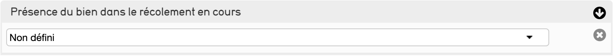
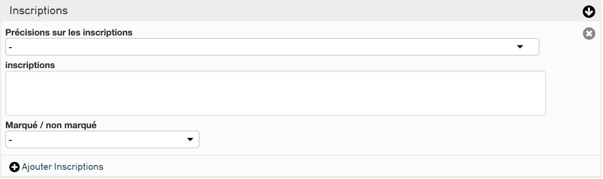

5. Le Récolement dans CollectiveAccess¶
Le récolement permet de vérifier les objets, CollectiveAccess vous accompagne dans cette démarche en proposant une procédure complète grâce à des campagnes de récolement
Comment créer une campagne de récolement ?¶
Rendez vous dans le menu Nouveau > Campagne de récolement, vous arriverez sur un nouvel écran de saisie afin de créer votre campagne.
Présentation de l'écran de saisie¶
Nom de la campagne¶
Nommez votre campagne de récolement de manière explicite afin de d'expliquer à quoi elle correspond

Numéro de la campagne¶
Un identifiant unique à la campagne

Récolement décennal¶
Définnisez une décennie pour votre récolement (les récolements sont triés par décennie)

Dates prévisionnelles de réalisation de la campagne¶
Notez ici les estimations de début et de fin de la campagne

Dates effectives de réalisation de la campagne¶
Notez ici les dates réelles de début et de fin de la campagne

Intervenants¶
Ce champ permet de préciser le nom des différents intervenants de la campagne. Ce champ est relié au fichier des entités, si vous ne trouvez pas le nom de l'intervenant la documentation pour le rajouter est disponible ici
Contenu scientifique de la campagne¶
Le contenu scientifique relatif à la campagne

Champs couverts¶
indiquez les differents champs couverts par la campgne et des notes realatifs à ceux-ci.

Méthode utilisée pour la campagne¶
Indiquez les caractéristiques techniques de la campagne et les differents moyens mis en œuvre pour cette derniere. (Ce champ est au format texte enrichi, vous pouvez appliquez des modifications sur la forme du texte (police,taille,couleur,etc..) comme pour un fichier word)

Localisation¶
Localisez où sont les objets à récoler

Caractérisation de l'espace¶
Selectionnez dans la liste déroulante le résultat le plus proche de l'espace du récolement

Conditionnement des biens à récoler¶
Indiquez le conditionnement des biens à récoler

Accessibilité¶
Les conditions d'accès physique de la campagne

Fiches de récolement liées¶
Champ affichant la liste des fiches de récolement de la campagne, ce champ est en lecture seule vous ne pouvez pas ajouter de fiches ici.
Lorsque des fiches sont disponibles cliquez sur celle de votre choix pour accèder à son écran de complétion

Date du PV¶
Date de génération du procès verbal de la campagne

Fichier numérique attaché à la campagne¶
Permet d'ajouter n'importe quel fichier à la campagne
Après avoir saisi votre campagne de récolement, enregistrez la via les boutons du même nom en haut et en bas de la page
Gérer la campagne¶
Pour accéder à la liste de vos campagnes rendez vous dans le menu Procédures Réglementaires > Suivi du récolement
Menu des campagnes¶
Le menu des campagnes vous permet de consulter l'intégralité de vos campagnes en cours.
Partie Gauche¶
Le menu de gauche offre un résume des informations concernant vos campagnes :
- la décennie des campagnes
- le nombre de campagne dans cette décennie
- le nombre d'objets récolés dans cette décennie
- le nombre d'objets pas encore récolés dans cette décennie
- le nombre total d'objets dans cette décennie
- le pourcentage total de finition des campagnes
Ces éléments se répetent pour chaque décennie dans laquelle est définie au moins une campagne. Sous ces informations ce trouvent différents liens de documentation ou d'assistance
Rafraîchir¶
Le bouton rafraîchir sert à mettre à jour les informations des campagnes, il est conseillé d'utiliser ce bouton à chaque retour sur cette page car la base ne se mets pas à jour seule
En dessous vous pouvez retrouver vos campagnes triées par décennie. Pour rétrécir/agrandir les informations d'une décennie, cliquez sur le bouton grisé de la décennie.
Pour chaque décennie vous pourrez retouver un suivi graphique ainsi qu'un tableau de progression.
Tableau de progression¶
Le tableau de progression résume tout les tableaux dans la décennie à laquelle il appartient en 8 colonnes :
- Le journal permet d'accéder à la page résumé de la campagne
- Campagne : Le numéro et le nom de la campagne, cliquez sur ce champ pour accéder à un résumé plus complet ainsi qu'à la liste des objets à récoler
- Localisation : fait réference au champ localisation saisi pour la campagne
- Type de collection : fait réference au champ champ couvert saisi pour la campagne
- Dates prévisionnelles : fait réference au champ Dates prévisionnelles de réalisation de la campagne
- Dates effectives : fait réference au champ Dates effectives de réalisation de la campagne
- Procès verbal : fait réference au champ Date du PV saisi pour la campagne
-
Nombre d'objets récolés :
- Générer les fiches : si aucun objet n'as été précisé pour la campagne vous pouvez générer les fiches en cliquant sur cette colonne puis en sélectionnant un ensemble
- Si des objets sont déjà en lien avec la campagne alors cette colonne affiche une barre de progression, le nombre d'objets récolé, le nombre d'objets total ainsi qu'une flèche verte pour ajouter d'autres ensembles d'objets. Cliquez sur la barre de progression pour accéder à la liste des objets à récoler
Récoler un objet¶
Pour récoler un objet il faut se rendre sur l'écran Informations du PV de récolement depuis campagne
Cette page donne un résumé plus complet de la campagne

En dessous se trouve le tableau des objets à récoler :
- Le journal permet d'accéder à la page de récolement de l'objet
- L'identifiant correspondant au nom de la fiche récolement de l'objet
- Le titre correspondant au nom de l'objet
- Le carré indique si l'objet est récolé (carré bleu) ou non (carré gris)
- Vu/non vu indique si l'objet à été vu lors du récolement
- L'emplacement indique ou été situé l'objet lors du récolement
Écran de récolement de l'objet¶
Le récolement d'un objet peut se faire seul ou faire partie d'une campagne de récolement, les champs sont les mêmes dans les 2 cas mais l'objet issu d'une campagne posséde certains champs pré-complété
Objets liés¶
Definissez ici l'objet à récolé

Photographie spécifique au récolement¶
Intégrez une image grâce à ce champ :
- Écrivez dans label préféré le nom que voous voulez donner à votre image
- Définissez l'accessibilité de l'image dans la liste déroulante "Accès"
- Vous pouvez définir un statut pour la représentation si vous attendez modifications ou si vous les avez réalisées

Photographie documentaire¶
Permet de donner des informations sur les photographies existantes de l'objet (cocher oui/non pour chaque photographie):
- Photographie existante
- Photographie des marques
- Photographie du/des numéros d'inventaire
- Photographie réalisée lors du récolement
Numéro de fiche du récolement précédent¶
Indiquez le numéro de fiche du précédent récolement de l'objet si l'objet a déjà été récolé
N° de fiche de récolement¶
Indiquez le numéro de la fiche du récolement de l'objet

Nom de l'objet récolé¶
Indiquez le nom de l'objet récolé

Présence du numéro d'inventaire¶
Notez le numéro d'inventaire de l'objet

Expertise du numéro d'inventaire¶
Permet de donner des informations sur le numéro d'inventaire de l'objet (cocher oui/non pour chaque photographie):
- Numéro d'inventaire marqué sur l'étiquette
- Numéro d'inventaire marqué sur l'objet
- numéro d'inventaire marqué sur un autre support
- Numero d'inventaire non identifiable
Un champ commentaire est disponible afin d'ajouter des informations sur le numéro d'inventaire

Présence d'un autre numéro¶
Indiquez si un autre numéro est présent sur l'objet
Problème d'identification¶
Indiquez s'il existe des problemes d'identification sur le numéro d'inventaire
Présence du bien dans le récolement précédent¶
Indiquez si le bien était présent lors de son précédent récolement

Présence du bien dans le récolement en cours¶
Indiquez si le bien est présent 
Date du précédent récolement¶
Indiquez la date du précédent récolement de l'objet
Date du récolement en cours¶
Indiquez la date du précédent récolement actuel
Localisation dans le précédent récolement¶
Indiquez ou se trouvait l'objet lors de son précédent récolement et quand il y a été vu

Localisation dans le récolement en cours¶
Indiquez ou se trouve l'objet et quand il a été vu
Emplacements liés¶
Indiquez un emplacement lié à l'objet. Ce champ peut faire référence au champ localisation dans le récolement en cours car il permet d'être plus précis

Campagne liée¶
Vous pouvez lié la fiche de récolement à une campgne. Si l'objet provient d'une campagne elle sera indiquée ici
Constat d'état¶
Décrivez l’état de l’objet : date du constat, constat d'état, état global et commentaire ; vous pouvez associer à ce constat tout document numérique souhaité.

Objet inventorié plusieurs fois¶
Cochez si l'objet a été inventorié plusieurs fois

Conformité avec la source¶
Définissez si l'objet est conforme avec sa source
Type et références de la source¶
Décrivez le type et les références de la source de l'objet

Inscriptions¶
Notez les inscriptions sur l'objet ici : le texte, son type et s'il est inscrit à la fiche de l'objet 
Récoleur¶
Indiquez ici le nom du récoleur de l'objet. Ce champ est relié au fichier des entités et CollectiveAccess vous permettra de créer la fiche du récoleur au fil de l'au

Date de visualisation¶
Notez la date à laquelle l'objet a été vu

Date de validation du récolement¶
Indiquez la date de validation du récolement sur place et la date de validation définitive
Valideur¶
Indiquez ici le nom du valideur du récolement. Ce champ est relié au fichier des entités et CollectiveAccess vous permettra de créer la fiche du valideur au fil de l'au
Récolement fait¶
Cochez si le récolement est fini où non

Occurences liées¶
Vous pouvez relié l'objet à des fiches de récolement (par exemple les anciens récolement de l'objet).

Suite à donner au récolement¶
Après le récolement d'un objet, sélectionnez cet écran afin de noter une ou plusieurs suites à donner au récolement.
Types de suites disponibles :
- Objet à identifier
- Objet à inventorier
- Objet à marquer
- Objet à photographier
- Objet à localiser
- Objet à traiter
- Objet à récoler ultérieurment
- Notice documentaire à créer
- Recherches complémentaires à poursuivre sur l'objet
- Plainte à déposer

Pour chaque suite possible cochez si elle est à réaliser et ajoutez des précisions. Une fois réalisée indiquez la date de réalisation et le détail des opérations effectuées (Pour une plainte déposé un fichier en lien avec la plainte)
Générer le procès-verbal¶
Après avoir fini le récolement, retournez dans Information du PV de récolement et cliquez sur Générer le procès verbal puis sur télécharger cela vous donnera un fichier word avec les informations de votre campagne